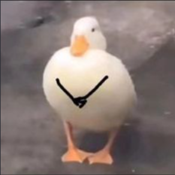
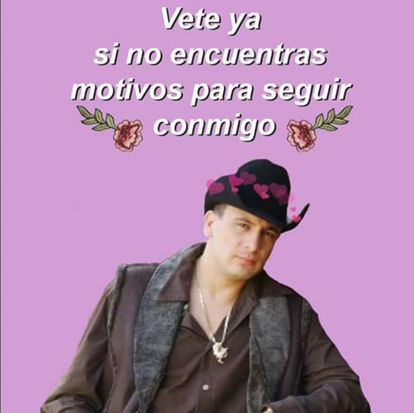

Toca el corazón


Ya vamos 4 meses, y quería darte este pequeño detalle solo para recordarte lo mucho que me importas y lo feliz que me haces. Realmente con palabras es difícil explicar lo que me haces sentir, realmente cuando estoy a tu lado, cuando te abrazo, cuando siento tu calor ❤️🔥, toda esa niebla mental, la ansiedad, el estrés, TODO eso se va, y solo siento una gran paz en mi corazón 🕊️❤️. Perdón si a veces digo cosas que te incomodan, perdón las veces que soy intenso (como hace rato) o las veces que siento que no me amas 😣, te juro que lastimarte no es mi intención, solo... es miedo 😣; miedo a perder lo que tengo contigo, miedo a perder a una persona tan perfecta para mí como lo eres tú 🥺❤️. Ya para terminar, solo quiero decir que me haces sentir muy orgulloso, te admiro muchísimo Mel, y hagas lo que hagas, siempre trataré de apoyarte princesa 💕🥰
Con amor, tu patito. 🥺🦆